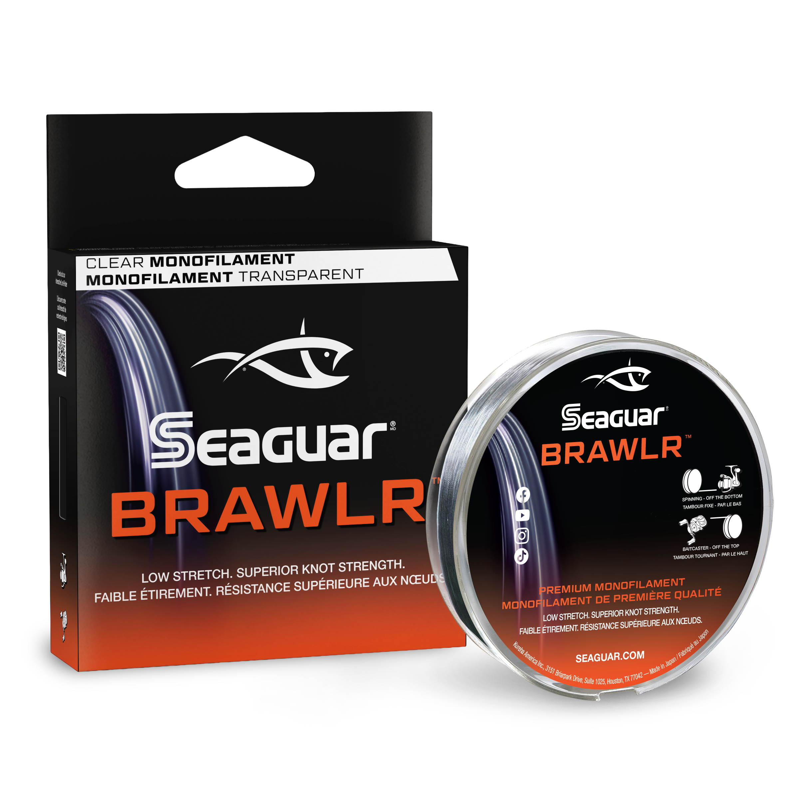

Seaguar BRAWLR Monofilament
Diameter chart, reel capacity & backing guide

BRAWLR is Seaguar's announced monofilament line, listed from 2 to 30 lb. Seaguar describes a temperature-controlled manufacturing process called PTD. This is a specification-based planning guide; a listing or capacity estimate does not establish retail availability or independent performance results.
- Construction
- Monofilament
- Listed strengths
- 2-30 lb
- Line type
- Monofilament main line
Is BRAWLR right for your setup?
Treat BRAWLR as a mono candidate to compare with other monofilament lines by actual diameter, not as a measured improvement over a line you already use. The manufacturer emphasizes strength and reduced stretch, but this guide has no independent BRAWLR test results. Check current availability and the label on the package you receive before finalizing a spool plan.
How much BRAWLR will fit?
Calculated estimates, not measured fills. Stop at the reel manufacturer's fill level even if some line remains.
Seaguar BRAWLR diameter chart
Assigned BRAWLR variants for Clear and Lo-Vis Green. The product was under a launch notice when checked; these specifications do not imply current retail stock.
| Strength | Inches | mm | Spools (yd) |
|---|---|---|---|
| 0.006 | 0.165 | 330 | |
| 0.008 | 0.205 | 330 | |
| 0.009 | 0.235 | 330 | |
| 0.010 | 0.260 | 330 | |
| 0.012 | 0.310 | 300 | |
| 0.013 | 0.330 | 300 | |
| 0.014 | 0.350 | 300 | |
| 0.015 | 0.370 | 300 | |
| 0.016 | 0.405 | 270 | |
| 0.019 | 0.470 | 270 | |
| 0.020 | 0.520 | 250 |
Choosing your BRAWLR strength
The range spans very light 2-6 lb entries through much heavier 20-30 lb mono. Those ends serve different tackle and fishing demands. Match the rod and presentation first; fitting a line onto a spool does not establish that the rod or reel is suited to fishing it.
BRAWLR 10 lb is listed at .012 inch, while 14 lb is .014 inch. If replacing a thinner 10 lb mono with BRAWLR, the reel may hold less even though the strength label stayed the same. Use the comparison table with your existing line's exact diameter.
At 25 and 30 lb, the published diameters reach .019 and .020 inch. Check handling as well as capacity before placing those sizes on a compact spinning reel. A substantial capacity result is not a recommendation for that pairing.
This is a specification-based setup guide, not a hands-on BRAWLR performance test.
Want a guided recommendation?
Continue in the Setup WizardSame pound test, different diameters
At your selected strength
Loading diameter comparisons...
What changes with another line?
Nearby diameters in the line database
| Line | Strength | Inches | Difference |
|---|---|---|---|
| Loading line database... | |||
Backing, working line & leaders
Use the length for your strength
The assigned variants list 330 yards for 2-8 lb, 300 yards for 10-17 lb, 270 yards for 20-25 lb, and 250 yards for 30 lb. Do not carry the 330-yard figure into a heavier-line purchase.
Full mono fill
For an all-BRAWLR spool, use capacity-only mode. It estimates the full amount of the selected mono, not an extra amount to add on top of line already on the reel.
Reusing a backing layer
Only reuse backing that is sound, secure, and long enough to support the intended working line. An estimated backing length cannot reveal the condition of line already hidden under a spool.
How Much Fits on These Reels?
Estimated full-spool capacity for the BRAWLR strength selected above, with no backing. These are calculated examples, not physical tests or recommendations for every pairing.
Loading capacity estimates...
BRAWLR questions, answered
Is BRAWLR fluorocarbon?
No. Seaguar identifies BRAWLR as monofilament. Do not substitute specifications from its fluorocarbon products simply because the brand is the same.
Has ReelCalc physically tested BRAWLR?
No hands-on BRAWLR performance result is claimed here. The chart comes from manufacturer specifications, and reel capacities are calculated estimates.
Can I buy every size shown here now?
Not necessarily. The manufacturer had a launch notice and unavailable variants when this source was reviewed. The table documents assigned specifications, not live stock. Check the seller's exact product, strength, and package length.
Specifications & sources
Specifications checked against Seaguar's assigned product variants on 2026-09-12. Unassigned package combinations are excluded. Stock and package design can change; use the diameter printed on your own package if it differs.
Calculations use the catalog's listed inch diameters. Published inch and millimeter values may differ slightly because of rounding.
- Official Seaguar BRAWLR specifications Product construction, diameter entries, and assigned retail package lengths.